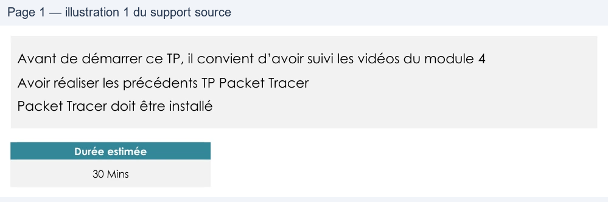

Transcription du document du Drive TSSR. La mise en forme est adaptée au Web ; les compléments IA du portail sont présentés séparément.
TP du Module 04 – Communication avec Packet Tracer
Avant de démarrer ce TP, il convient d’avoir suivi les vidéos du module 4
Avoir réaliser les précédents TP Packet Tracer
Packet Tracer doit être installé
Durée estimée
30 Mins
Pour découvrir le fonctionnement de Packet Tracer, vous devez :
•
Copier le fichier « M04-01-02–TP-Packet_Tracer-La_communication.pka »
•
L’ouvrir avec Packet Tracer
•
Vous allez mettre en place la communication inter réseau.
•
Suivre les directives
